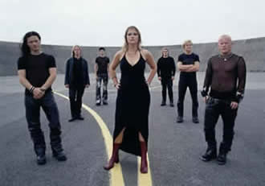
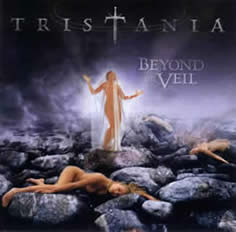

Entrevista da banda à Gisele Santos - MundoRock.net - Janeiro de 2002
Por que convidaram um vocalista para participar do novo álbum e não esperaram os novos integrantes? Foi pressão da gravadora? O cara deixou a banda no meio das gravações e preferimos convidar o vocalista, porque as músicas já estavam escritas e era só gravar. Também precisávamos cumprir o prazo da gravadora e só depois que encontramos os novos vocais. Foi uma pena, porque eles são muito bons. Uma escolha perfeita!
A cena do Gothic Metal tem crescido no Brasil. Como é na Europa e vocês têm contato com bandas como Lacrimosa, etc? Realmente sabemos que no Brasil esta cena é muito forte. Na Noruega é meio fraco e a galera curte mais o Black Metal. Sim! Temos contato com as outras bandas e isso é legal.
Além do Brasil, onde mais vocês possuem um bom público? Gostamos de tocar no sul da França, na Bélgica e Holanda. Fizemos um show em Milão no ano passado e havia poucas pessoas. Rolaram problemas técnicos, mas os fãs ficaram lá esperando e curtiram muito o show. Foi estranho ver tão pouca gente, mas ficamos satisfeitos por ter visto que eles gostaram tanto e que realmente eram nossos fãs.
Como denominam o som da banda e quais são as influências? Não podemos rotular o nosso som, porque nós gostamos de tudo. Rotular uma banda tem que ser: boa ou ruim. Mantemos a cabeça aberta para tudo, unimos os nossos gostos para sugar os melhores elementos e ver o que vai sair. Cada um gosta de uma banda diferente: Sepultura, Machine Head, David Bowie, etc.
Como Vibeke entrou para a banda? Eu estudava com a ex-namorada do Kenneth e ela avisou que iriam fazer os testes, eu fiz e consegui fazer parte do Tristania. Tenho formação clássica e estudei muito a técnica de voz.
Quando vocês preparam as novas músicas? Durante a turnê ou somente quando voltam para casa? Preparamos tudo entre o final da turnê e data do próximo álbum. Vamos anotando tudo para não esquecer, mas durante a turnê é difícil fazer as músicas, porque temos passagem de som ou estamos de ressaca. (risos)
Como foi a aceitação do público em relação dos novos integrantes? Nós estávamos muito nervosos, mas a aceitação foi muito boa. Todo mundo gostou!
Além de se inspirarem em mitos medievais, quais outras inspirações que vocês usam para compor as músicas do Tristania? Não tem um tema base para fazermos nossas composições. O novo disco mudou um pouco e nele falamos sobre experiências de vida. Cada um que ler e ouvir irá interpretar para si mesmo, cada um do seu jeito.
Vocês também adotaram uma mulher como linha de frente. Isso foi um marketing? Como enxergam o movimento gótico até os dias de hoje? Não usamos a vocalista mulher para promover a banda. Não importa que seja mulher ou homem. Ela é vocalista da banda. O fato de ela ser uma mulher é que a voz dela se encaixa perfeitamente no tipo de som que fazemos. Claro que muitas bandas usam uma mulher para promover a banda, mas este não é o nosso caso. Sobre o movimento gótico... A Bela e a Fera foi algo muito importante para o Gothic Metal e por isso usam mulheres nas bandas. Hoje existem muitas bandas na Europa, porque as gravadoras resolveram ganhar dinheiro com isso, mas achamos que somente bandas que possuem identidade e atitude irão sobreviver.
Vocês foram uma das primeiras bandas a misturar música gótica ao metal extremo. Como foi a aceitação das pessoas no início da banda? Esta foi uma das razões que nos fez crescer, porque com esta mistura conseguimos atrair pessoas de todos os estilos. Beyond the Veil é um disco que tem todos os elementos, partes pesadas e também músicas bem leves. Isto é o que mais caracteriza a banda, porque fazemos o que gostamos e conseguimos misturar vários elementos. Sempre iremos tocar metal, porque gostamos muito.
Como são escolhidas as fotos das capas e porque nunca usam desenhos? Passamos o significado do disco para o designer e ele faz as capas. Nós escolhemos a que mais gostamos. Ainda não sabemos se futuramente iremos mudar de fotos para desenhos.
Por que o nome World of Glass (Mundo de Vidro)? E o que é o mundo de vidro para vocês? O mundo é frágil, como o título diz. Tudo pode acontecer. Podemos estar aqui conversando e daqui à pouco morrer. Tudo é frágil nesse mundo. Caíram em cima da gente achando que tínhamos nomeado o disco em cima dos atentados terroristas nos EUA, mas já tínhamos escolhido o nome antes disso. Só que no final isso que aconteceu nos EUA também é uma prova que o mundo é frágil. Todos estavam no prédio trabalhando e minutos depois tudo desabou.
Vocês seguem algum culto ou crença? A mitologia nos afeta como a qualquer pessoa. Nós sabemos tudo sobre isso, porque lemos bastante sobre o assunto. A maioria de nós é ateu. Religião é algo perigoso, porque pode ser usada para o bem ou para o mal, tornando-se fundamentalista.
Como fazem nos shows para reproduzir os violinos e coros? Nessas partes não tem como fazer ao vivo e colamos playback.
Usam guitarrista só para shows? Colocamos base de guitarra para reproduzir ao vivo.
Como é ter vocalistas diferentes? Muito legal, porque usamos influências de vários estilos. Podemos fazer vários tipos de sons, algo gritado e em outras músicas algo mais limpo, conforme for os timbres da música. Esta é a nossa marca registrada, porque exploramos muito mais as músicas e fazemos o que queremos.
Extraída de www.mundorock.net
|